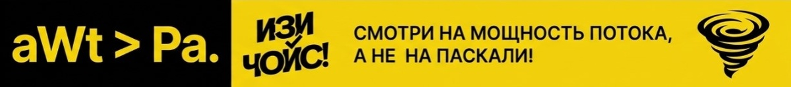
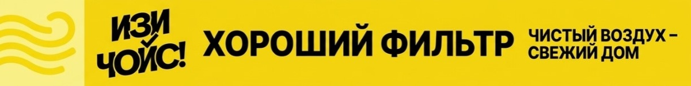
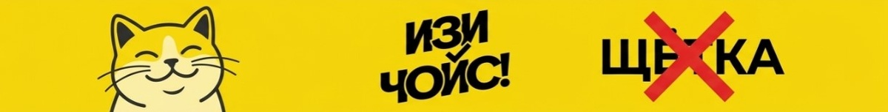
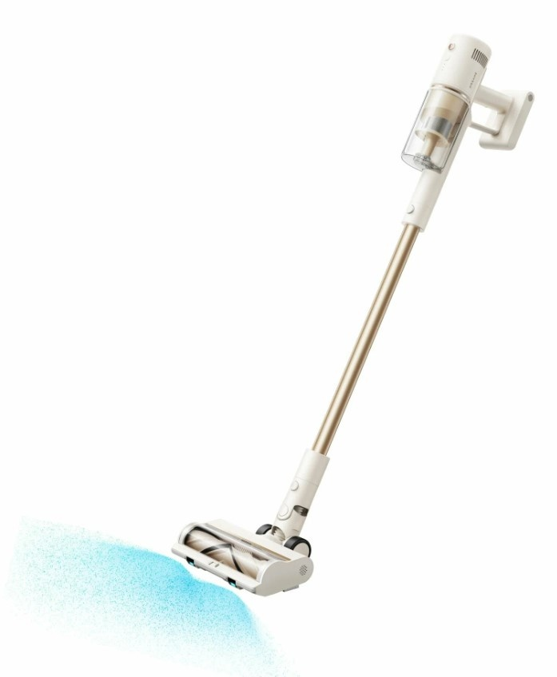
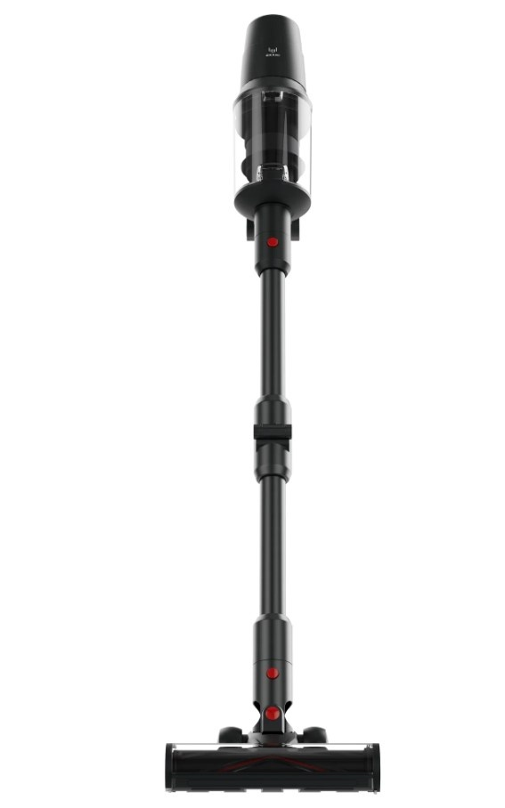
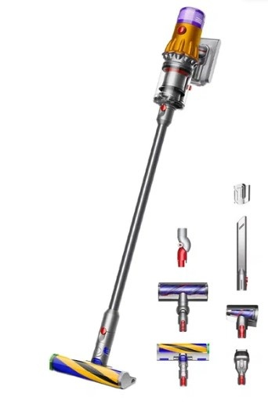
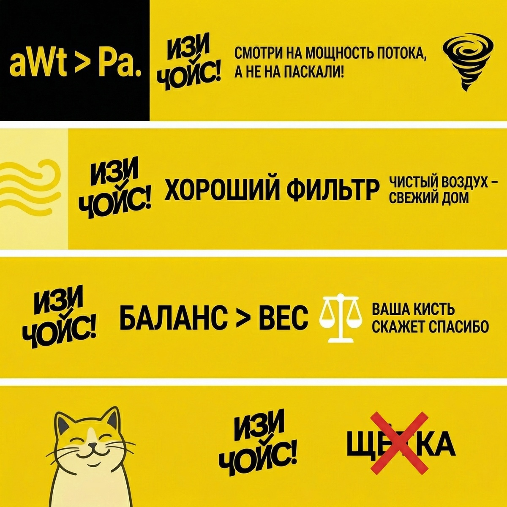

Вертикальный пылесос 2026: Как не купить просто «красивую метлу»

Беспроводной пылесос — пожалуй, самый коварный гаджет. В магазине он кажется легким и мощным, а дома выясняется, что он «выплевывает» мусор обратно, разряжается на середине ковра, а его чистка занимает больше времени, чем сама уборка.
Чтобы ваш выбор был действительно «ИЗИ», давайте заглянем «под капот» и разберем четыре нюанса, о которых маркетологи скромно молчат, пока вы тянетесь за картой.
Нюанс №1: Паскали (Pa) vs Аэроватты (aWt) — битва за правду
В характеристиках часто пишут огромные цифры в Паскалях (Pa). Это сила разрежения. Представьте: вы плотно закрыли трубу ладонью — вот как сильно она «присосалась», это и есть Паскали. Но мы ведь не пылесосим с закрытой трубой, верно?
Нам важны Аэроватты (aWt) — это мощность воздушного потока «в движении». Именно она определяет, затянет ли пылесос тяжелый песок или просто погладит его.

ИЗИ-совет: Если в характеристиках нет аэроватт — это повод насторожиться. Для ламината нужно от 100 аВт, для ковров и шерсти — минимум 150–180 аВт.
Нюанс №2: Вес и балансировка (не дайте руке «отвалиться»)
Пылесос может весить всего 1.5 кг, но ощущаться как гиря. Всё дело в центре тяжести.
- Двигатель сверху: Идеально для уборки под диванами и паутины на потолке, но вся нагрузка идет на вашу кисть. Через 15 минут рука начнет молить о пощаде.
- Двигатель снизу: Центр тяжести у пола, пылесос «едет» сам. Но залезть под низкую кровать им невозможно — мешает корпус.
ИЗИ-совет: Если у вас квартира больше 60 кв.м., ищите модель с «гибким коленом» (труба, которая сгибается пополам) — это снимет нагрузку со спины.
Нюанс №3: Система фильтрации (чтобы не чихать)
Дешевые пылесосы — это «перераспределители» пыли: они засасывают крупный мусор, но выбрасывают микроскопическую взвесь обратно. Если после уборки в комнате пахнет «старым пылесосом» — фильтрация не справляется.

ИЗИ-совет: Ищите честный HEPA-фильтр 12 или 13 класса. Проверьте, чтобы он был моющимся — это сэкономит бюджет на расходниках.
Нюанс №4: Щетка — главный враг волос
Если у вас есть кот, собака или длинные волосы, обычная щетина превратится в «мохнатый валик» через одну уборку. Срезать это потом ножом — сомнительное удовольствие.

ИЗИ-совет: Ищите щетки с силиконовыми валиками (вместо щетины) или модели с «зубчиками» внутри сопла, которые разрезают волосы в процессе. Кот, даже если его нет, он такой — может в жизни появиться внезапно.
Выбираем модель: от «Бюджетного спасателя» до «Космического корабля»
1. Бюджетный сегмент (до 12 000 руб.)
Когда нужно надежное устройство, чтобы быстро навести порядок, не продавая почку.

Tuvio TS02MBHW: Тот самый вариант «цена-качество» от бренда Яндекса. Честный, простой, без лишних понтов.- Dreame R10S Essential: Настоящий рекордсмен по весу — всего 1.28 кг. При этом выдает честные 100 аВт. Идеален для тех, кто ценит легкость и маневренность. Хватает на 40 минут — вполне достаточно для стандартной «двушки».
- Xiaomi G20 Lite: Главная фишка — подсветка на турбощетке. Вы удивитесь, сколько пыли не видели раньше. Работает до 45 минут, выглядит стильно в белом цвете, но весит побольше (2.4 кг). Отличный выбор для основательной уборки твердых полов.
- Tuvio TS02MBHW: Тот самый вариант «цена-качество» от бренда Яндекса. Честный, простой, без лишних понтов, но со своей задачей справляется на все сто. Отлично впишется в современный интерьер благодаря черно-серебристому дизайну.
2. Средний сегмент — «Золотая середина» (20 000 – 35 000 руб.)
Когда хочется качества, мощности и удобных «фишек».

Dyson V8 Advanced: Входной билет в мир «премиума». Шикарная фильтрация и проверенная годами эргономика.- Okami V620: Настоящий зверь с заявленными 37 000 Па. Главный кайф — флекс-труба (сгибается пополам, чтобы вы не ползали на коленях под кроватью) и очень яркая LED-подсветка.
- Bosch BCS611P4A: Немецкая классика. Главная фишка — взаимозаменяемый аккумулятор из серии Power for ALL. Если у вас есть шуруповерт Bosch, батарейка подойдет и сюда. Сделано на века.
- Dyson V8 Advanced: Входной билет в мир «премиума». Тянет ковры на ура.
3. Премиум сегмент — «Флагманы» (65 000 руб. +)
Когда хочется лучшего, что придумало человечество.

Dyson V16 (DS60) Piston Animal: Тяжелая артиллерия. Невероятная мощность, идеален для владельцев животных.- Dyson V12 Detect Slim Absolute: Тот самый пылесос с зеленым лазером, который подсвечивает невидимую пыль. Легкий, маневренный и очень технологичный.
- Dreame Z20: Новинка с феноменальной мощностью и двойной системой щеток. Интеллектуальный режим сам решает, когда добавить газу.
- Dyson V16 (DS60) Piston Animal: Тяжелая артиллерия. Невероятная мощность, идеален для владельцев животных и больших домов. В комплекте идет удобная напольная зарядная стойка.
Резюме: Так какой же выбрать?
Чтобы окончательно разложить всё по полочкам, вот итоговая шпаргалка «ИЗИ ЧОЙС!».
Экспертный вывод:
- Если бюджет поджимает: Однозначно Tuvio TS02MBHW. Это самый честный способ получить работающий беспроводной пылесос за минимальные деньги. Без магии, но мусор собирает.
- Если важна легкость и маневренность: Берите Dreame R10S (бюджет) или Dyson V12 Detect Slim (премиум).
- Если дома ковры и много волос: Ваш выбор Okami V620 или мощный Dyson V16 Piston.
- Если нужна надежность на годы: Bosch или Dyson V8 Advanced.
Помните: техника должна работать на вас, а не вы на неё. Делайте свой ИЗИ ЧОЙС! ✨
Сохраняй шпаргалку, чтобы не забыть о важном при выборе вертикального пылесоса.
